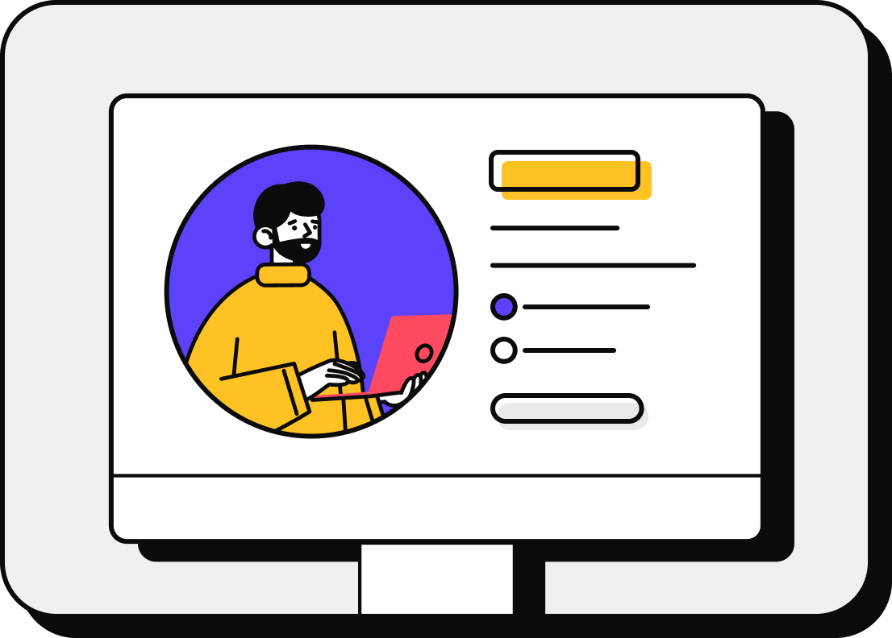

Bonjour, je suis Théo VERGER
Notre colaboration, permettra de réaliser au mieux l'application que vous avez souhaité.

Mon histoire en tant que développeur
Lors de mon dernier poste, en tant que Technicien de Maintenance, j'ai pu être confronté au domaine du numérique et notamment dans la programmation. Cette initiation en interne m'a permis de découvrir un nouveau milieu qui m'intéressait donc j'ai commencé en autodidacte à me former au métier de développeur web.
En janvier 2023, grâce à France Travail j'ai eu l'occasion de participer à une initiation au codage à l'AFPA de Rennes. J'ai obtenu une certification TOSA en PHP. En juin de cette année, je poursuis ma formation en tant que développeur web et web mobile au sein de l'ENI afin d'acquérir les compétences et les connaissances nécessaires dans ce domaine en constante évolution.
Mon objectif est de continuer à évoluer en obtenant la licence de concepteur développeur d'applications et en visant des postes à responsabilité.
Apprentissage en autodidacte
J'ai commencé tous d'abord à voir les différents métiers qu'il y avait dans le domaine du numérique. Celui qui m'a beaucoup intrigué est celui de développeur web et de là, j'ai commencé à me former dans un premier temps avec langages de front-end comme par exemple : HTML et CSS.
Puis avec le mois d'initiation avec l'Afpa, j'ai pu commencer à découvrir un langage plutôt côté back-end comme : PHP. Après cette formation, j'ai su que le métier pouvait fortement m'intéresser alors j'ai décidé de continuer le projet en allant décrocher un diplôme de niveau BAC +2 à l'ENI situé à Chartres de Bretagne.
Découverte de nouveau langage de programmation et de nouvelles compétences.
Ce parcours de reconversion est un projet qui se réalise enfin...
Jetez un oeil à mon CV
Stage - Développeur web et d'application
Pendant mon stage au sein de DMB Electricité en tant que développeur web et d'application, j'ai eu l'occasion de travailler avec : PHP, Symfony, Javascript Vanilla, Css, Bootstrap et Html.
Formation - Développeur web et web mobile
J'étais en formation au sein de l'ENI en tant que développeur web et web mobile, où j'ai passé mon titre D2WM Bac +2.
Certification - TOSA PHP
J'ai obtenu un score de 600 sur 1000, attestant de ma compétence opérationnelle avec la certification TOSA en PHP.
Formation - TOSA Numérique
J'ai suivi une formation d'initiation au développement web d'un mois au sein de l'Afpa de Rennes, motivé par le fait qu'elle m'ouvrait l'accès à des financements régionaux pour ma formation future. Cette opportunité m'a également permis de passer la certification TOSA PHP.
Technicien de Maintenance - Eiffage Energie Système CLEVIA
J'ai effectué ce poste sur le site du BMT-HC Jean Dausset (CHU).
Je m'occupais des process suivant :
- STERELISATION
- PHARMACIE
- ENTRETIEN DU BATIMENT
(Electricité, Incendie, Portail ...)
Technicien de Maintenance - COOPERL
J'ai effectué des maintenances curatives et préventives sur la chaîne de production à Monfort-Sur-Meu.